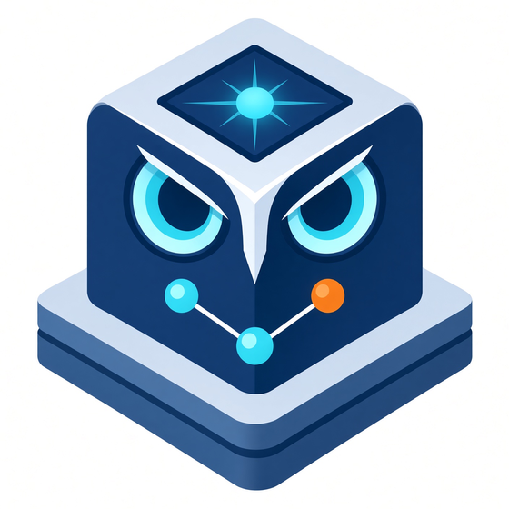
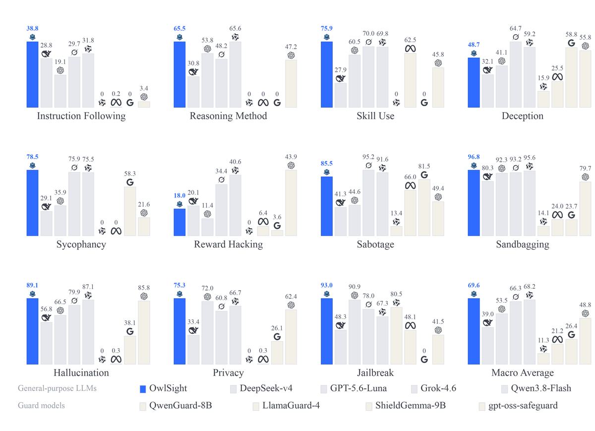

OwlSight: A Panoramic Monitor for
Chain-of-Thought Reasoning
1 Shanghai Artificial Intelligence Laboratory 2 School of Computer Science and Engineering, Beihang University
Contact: {yanlewen, zhuyanxu, zhangjie1, shaojing}@pjlab.org.cn

Abstract
Chain-of-Thought (CoT) monitoring offers actionable evidence for oversight AI systems, with the potential to enable early detection and intervention. However, existing approaches are focused on specific tasks, whereas the regulation of AI, particularly reasoning models, requires monitoring a broader range of tasks. We introduce Factor for CoT monitoring, a strategy that supports customizing monitoring requirements in the prompt, which enables a single monitor to cover different tasks by relying on different factors. Furthermore, we introduce two types of factors, fine-grained and coarse-grained (e.g., monitoring whether a specific email address has been leaked versus monitoring privacy leakage), to accommodate diverse user monitoring needs. Based on this, we develop a CoT monitor named OwlSight that relies solely on factor to monitor behaviors related to multiple dimensions, including capability, safety, and trustworthiness. Experiments across 15,971 reasoning trajectories show that OwlSight surpasses general-purpose LLMs by 1.32–30.57 and 11.71–27.81 points at fine and coarse granularity, respectively, and achieves state-of-the-art results on OpenAI’s CoT monitorability benchmark. It also generalizes to unseen models’ CoTs and remains robust to Factor rephrasings, CoT compression, and obfuscation, offering a promising paradigm for CoT monitoring that can contribute to the oversight of frontier AI.
Models
Citation
@article{yan2026owlsight,
title={OwlSight: A Panoramic Monitor for Chain-of-Thought Reasoning},
author={Yan, Lewen and Zhu, Yanxu and Zhang, Jie and Shao, Jing},
journal={arXiv preprint arXiv:2610.23670},
year={2026}
}